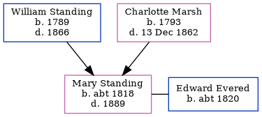

Mary Ann Evered (née Standing) c1818 - 1889
[ Home ] | [ Calendar ] | [ Surnames Index ] | [ Errors ] | [ Family History ]The child of William Standing (an agricultural labourer) and Charlotte Marsh, Mary Standing, the first cousin four-times-removed on the father's side of Nigel Horne, was born in Folkestone, Kent, England c. 18181,2 and baptised there on 25 Oct 1818. She was married to Edward Evered. In 1881, she was living in Leeds, West Yorkshire, England1 which is where she died in 18892 (jul/Aug/Sep).
Parents
- William was born in 1789
- Charlotte was born in 1793
Citations
- 1881 England Census Online publication - Provo, UT, USA: The Generations Network, Inc., 2004. 1881 British Isles Census Index provided by The Church of Jesus Christ of Latter-day Saints © Copyright 1999 Intellectual Reserve, Inc. All rights reserved. All use is subject to the (Relation to Head of House: WifeMarital Status: Married)
- England & Wales, FreeBMD Death Index: 1837-1915 Online publication - Provo, UT, USA: The Generations Network, Inc., 2006.Original data - General Register Office. England and Wales Civil Registration Indexes. London, England: General Register Office. © Crown copyright. Published by permission of the Cont
Family Tree
Map
Generated by ged2site. Last updated on Jul 3, 2024